13. 설정 (Settings)#
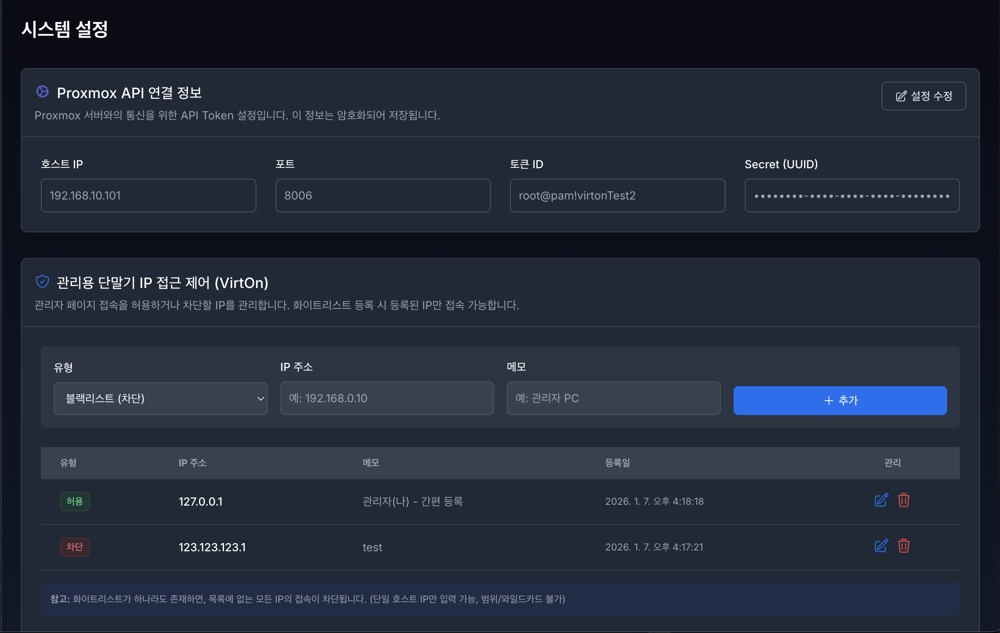
VirtOn 시스템의 핵심 기능을 사용하기 위해서는 Proxmox 서버 연동이 필수이며,
관리자 페이지 보안을 위해 IP 접근 제어 기능을 제공합니다.
1. Proxmox API 연결 설정#
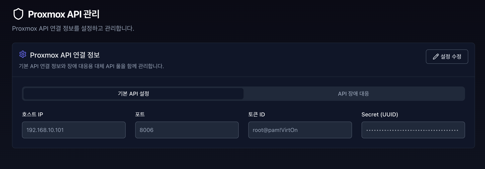
VirtOn이 가상머신(VM)을 제어하고 모니터링하기 위해 Proxmox VE 서버와의 API 통신을 설정합니다.
1.1 입력 항목 설명#
항목 |
설명 |
예시 |
|---|---|---|
호스트 (Host) |
Proxmox VE 서버의 IP 또는 도메인 ( |
|
포트 (Port) |
Proxmox API 포트 (기본값) |
|
토큰 ID |
|
|
시크릿 키 |
해당 토큰의 시크릿 키 값 (암호화 저장) |
- |
1.2 주요 기능 버튼#
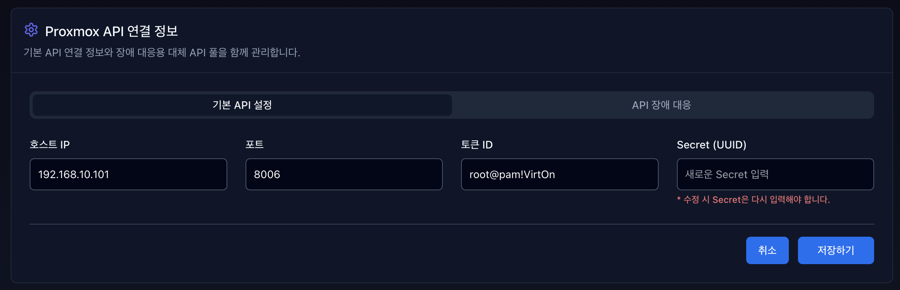
설정 수정
저장된 검증 연결 정보를 수정하고 즉시 시스템에 반영합니다.“SUPER_ADMIN” 및 “ADMIN” Role이 아니라면 수정은 불가능 합니다. 수정을 원한다면 관리자 계정에게 문의해주세요.
모든 값을 입력하지 않거나 알맞은 값을 입력하지 않으면 수정은 불가합니다.
💡 참고
설정 저장 후 VM 목록이 보이지 않는 경우, 네트워크 방화벽 설정 또는
Proxmox 사용자 권한(Permission)을 확인하세요.
2. 관리자 IP 접근 제어 (IP Access Control)#
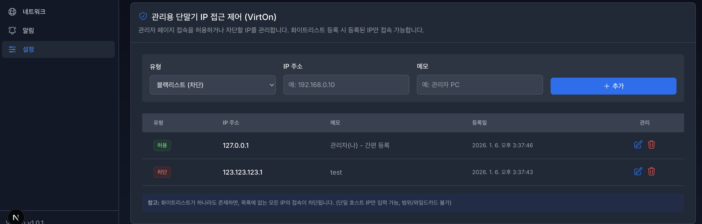
VirtOn은 외부 공격 및 비인가 접근을 방지하기 위해
IP 기반 접근 제어(화이트리스트 / 블랙리스트)를 제공합니다.
2.1 보안 정책 (작동 원리)#
시스템은 화이트리스트 등록 상태에 따라 자동으로 모드가 전환됩니다.
개방 모드 (Open Mode)#
조건: 화이트리스트 IP가 0개일 경우
동작: 블랙리스트에 없는 모든 IP 접근 허용
잠금 모드 (Lockdown Mode)#
조건: 화이트리스트 IP가 1개 이상 등록될 경우
동작: 화이트리스트 IP만 접근 허용 (강력 보안)
2.2 주요 기능 사용법#
2.2.1 내 IP 간편 등록 (권장)#
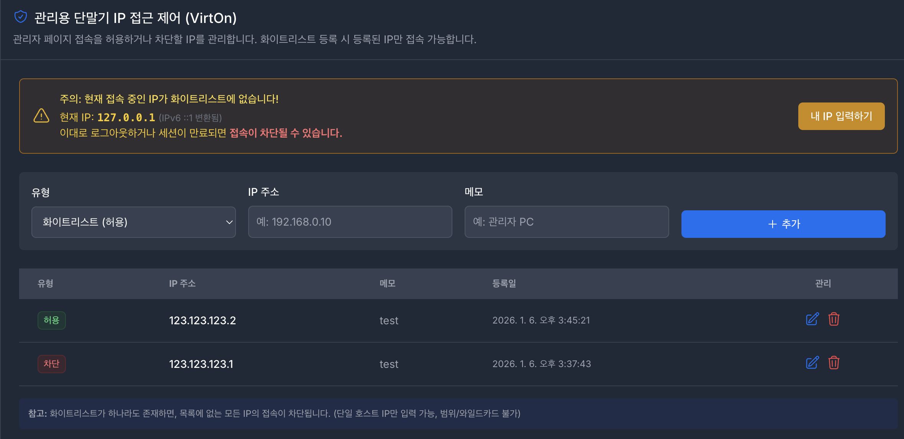
화이트리스트 최초 설정 시, 본인 IP 차단을 방지하기 위한 기능입니다.
상단 경고 배너 “현재 접속 중인 IP가 화이트리스트에 없습니다!” 확인
[내 IP 입력하기] 버튼 클릭
자동 입력된 IP 확인 후 [추가] 클릭
2.2.2 IP 직접 등록#
유형 선택
WHITELIST: 허용 IP (관리자 PC, 사무실 IP)BLACKLIST: 차단 IP (공격 의심 IP 등)
IP 주소
단일 IP만 허용
예:
123.456.0.10❌ 와일드카드, CIDR(
192.168.0.0/24) 불가
메모
식별 가능한 설명 입력
예:
OOO 팀장 자택
2.2.3 IP 수정 및 삭제#
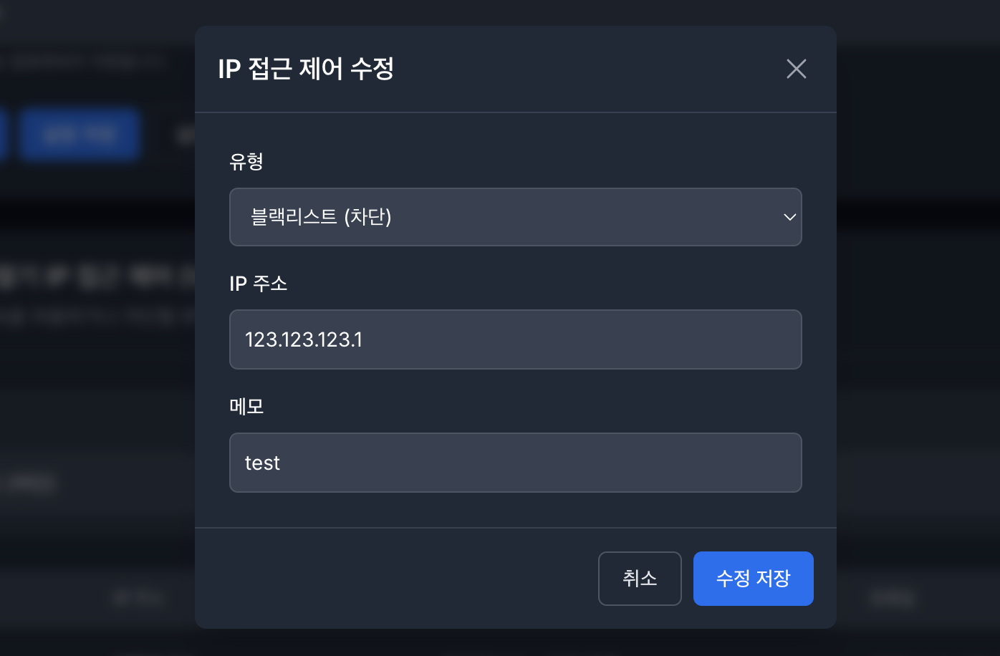
IP 수정 : 리스트 더블 클릭 혹은 펜슬 아이콘 클릭 시 사용 가능, 수정 방법은 IP 직접 등록과 동일
IP 삭제 : 리스트 쓰레기통 아이콘 클릭 시 삭제 가능
2.2.4 자동 차단 (IPS)#
짧은 시간 내 반복 로그인 실패 IP는 자동 블랙리스트 등록
오차단 시 목록에서 해당 IP를 찾아 [삭제] 버튼 클릭 시 즉시 해제
2.3 긴급 조치 가이드 (Lockout 상황)#
유일한 화이트리스트 IP 삭제 또는
등록되지 않은 위치에서의 긴급 접속이 필요한 경우 접근이 차단될 수 있습니다.
이 경우 DB 관리자에게 직접 연락하여 조치를 받아야 합니다.
3. 계정 관리#

계정관리는 VirtOn 시스템을 사용하는 사용자 계정을 효율적으로 관리하기 위한 핵심 기능입니다. 관리자는 이 화면에서 새 계정을 추가하고, 기존 계정의 정보를 수정하며, 사용자 역할을 관리할 수 있습니다.
3.1 계정 추가#

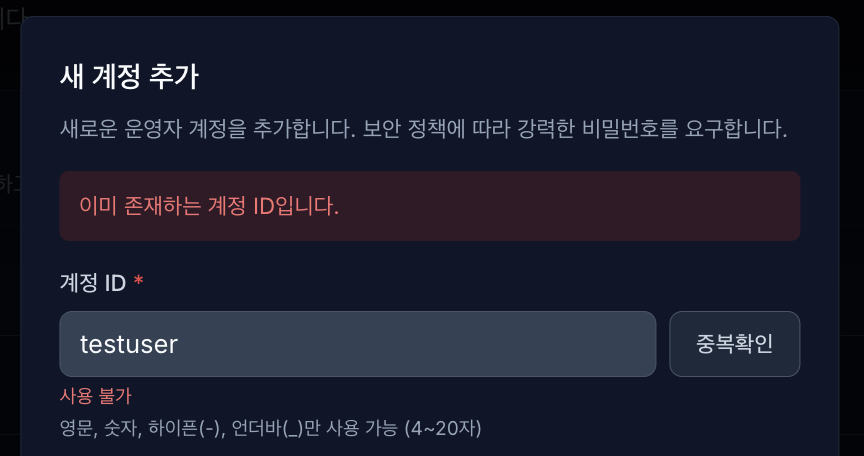
계정ID: 영문, 숫자, 하이픈, 언더바만 사용 가능하며 입력 후 중복 확인을 클릭합니다.
중복된 아이디가 있을 경우 존재 여부 메시지와 함께 생성 불가합니다.
3.2 역할 선택#

역할 선택
관리자: 클러스터 구축, HA 설정, 스토리지 관리, VM/CT 전체 생명주기 관리
커스텀: 사용자/모니터링 계정만 관리 가능한 부분 관리자 (ADMIN, SUPER_ADMIN은 제어 불가)
멤버: 할당된 자원에 대한 운영 및 사양 수정 권한
모니터링: 대시보드, 리소스, 알림 페이지 조회만 가능
3.3 비밀번호#
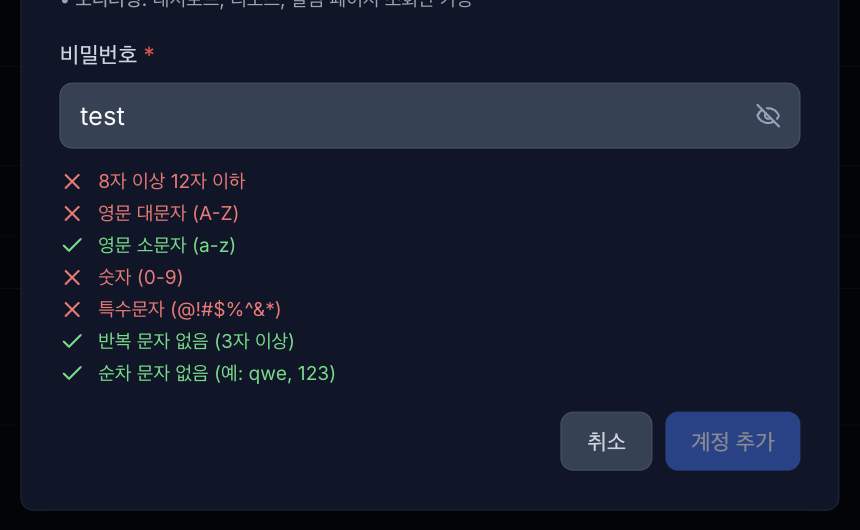
비밀번호: 패스워드 정책은 위와 같으며 입력 시 실시간으로 검증하고, 모든 조건 충족 시 생성 가능합니다.
입력 칸 우측 눈 모양 아이콘 클릭 시 입력한 비밀번호를 확인할 수 있습니다.
3.4 관리#
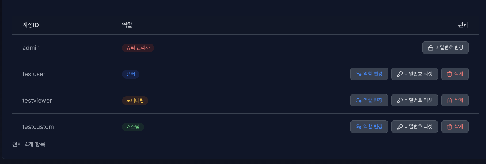
관리 영역은 비밀번호 변경, 역할 변경, 비밀번호 리셋, 삭제가 있습니다. 단, 역할변경, 비밀번호 리셋, 삭제 기능은 관리자만 제어할 수 있습니다.
3.4.1 비밀번호 변경#


비밀번호 변경: 기존 비밀번호를 입력하며 새 비밀번호도 동일하게 패스워드 정책을 적용해 실시간으로 검증합니다.
비밀번호 변경은 자신의 계정만 변경 가능합니다. (해당 계정에 직접 로그인 후 변경)
3.4.2 역할 변경#
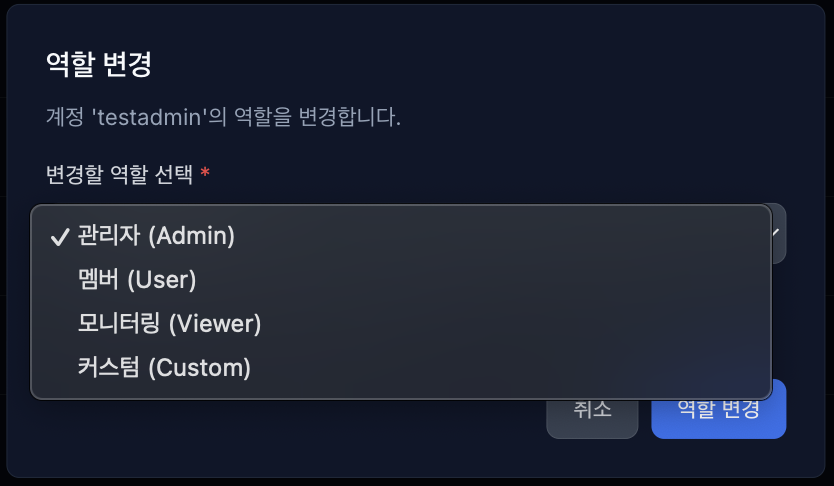
역할 변경은 관리자만 제어 가능하며 역할(role) 변경을 통해 권한 상승 또는 권한 하향 시킬 수 있습니다.
역할 변경 시 해당 계정의 기본 권한이 변경됩니다.
3.4.3 비밀번호 리셋#
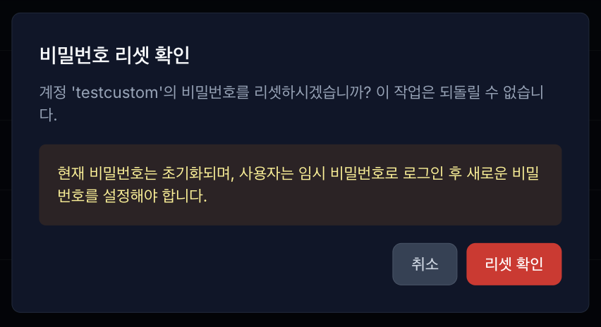

비밀번호 리셋은 관리자만 제어 가능하며 다른 계정의 비밀번호를 초기화 하고 임시 비밀번호를 발급받습니다.
발급받은 임시 비밀번호를 복사해서 해당 계정에게 전달합니다.
전달받은 계정은 직접 임시 비밀번호로 로그인 접속해서 비밀번호를 변경합니다.
3.4.4 삭제#

삭제 기능은 관리자만 가능하며 다른계정들을 삭제할 수 있습니다.
4. 이메일 알림 설정#
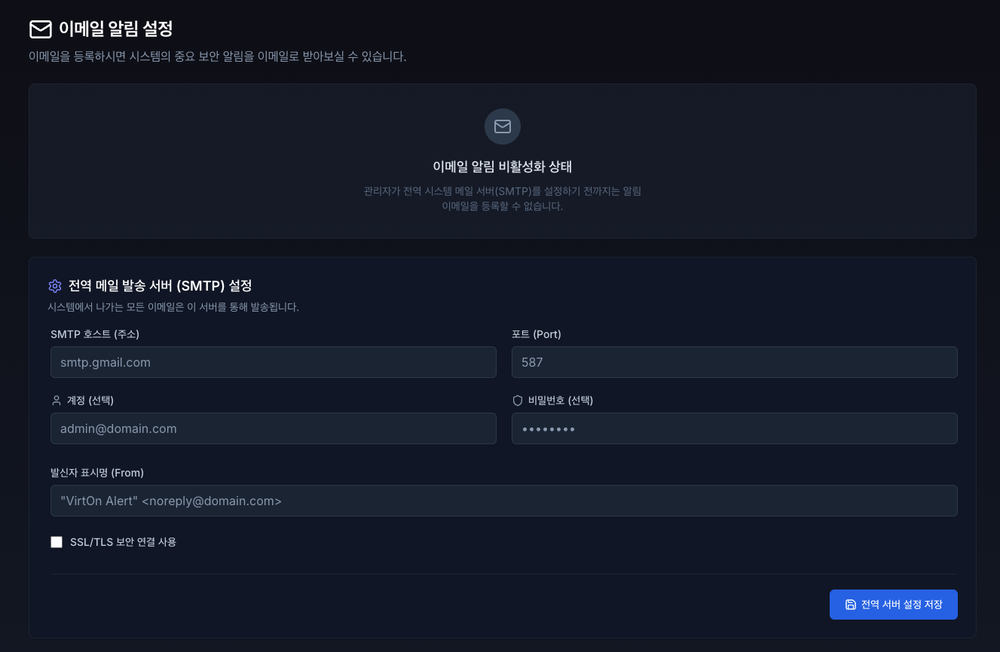
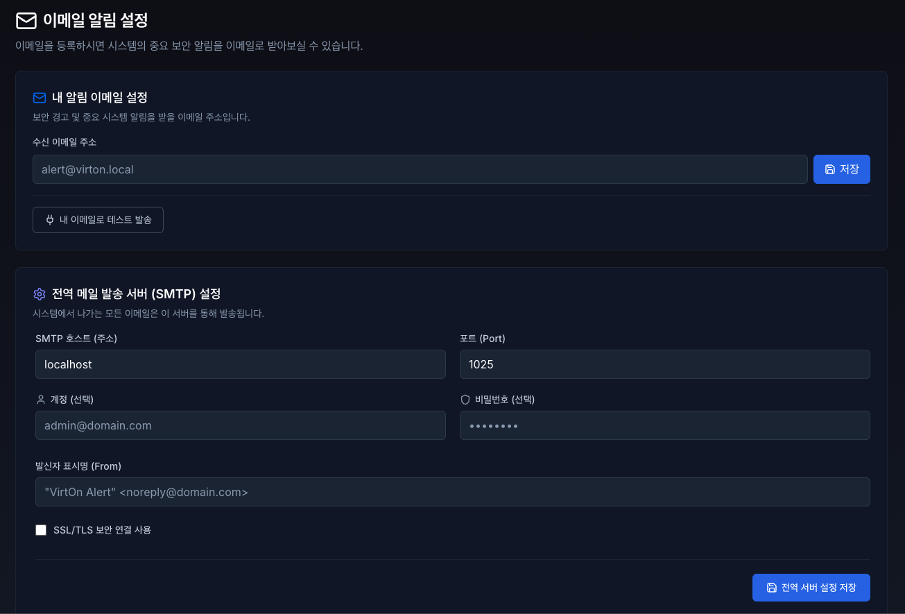
VirtOn 시스템에서 발생하는 중요한 보안 이벤트(예: 5회 이상 로그인 실패로 인한 계정 잠금, 디스크 용량 임계치 초과 등)를 즉각적으로 인지할 수 있도록 이메일 알림을 설정하는 공간입니다.
4.1 이메일 알림 비활성화 상태#
시스템에 **전역 발송 서버(SMTP)**가 등록되지 않은 초기 상태에서는 개인 알림 이메일을 설정할 수 없도록 입력 폼이 비활성화됩니다.
조치 방법: SUPER_ADMIN 또는 ADMIN 권한을 가진 관리자가 하단의 **[전역 메일 발송 서버 (SMTP) 설정]**을 먼저 완료해야 합니다.
4.2 내 알림 이메일 설정 (모든 사용자 공통)#
관리자에 의해 SMTP 서버가 정상적으로 연동되면, 모든 사용자는 본인의 보안 경고 및 시스템 알림을 수신할 이메일 주소를 등록할 수 있습니다.
수신 이메일 주소 입력: 알림을 받을 본인의 실제 이메일 주소를 입력합니다. (예: alert@virton.local)
[저장] 버튼 클릭: 이메일 주소를 시스템에 등록합니다.
[내 이메일로 테스트 발송] 클릭: 설정한 이메일로 알림이 정상적으로 수신되는지 즉시 테스트합니다.
발송 성공 시 우측 상단에 완료 알림이 표출되며, 메일함에서 VirtOn 발송 테스트 메일을 확인할 수 있습니다.
💡 참고 > 테스트 메일이 도착하지 않는다면 스팸 메일함을 먼저 확인해 주시고, 그래도 수신되지 않는다면 사내 메일 방화벽 문제일 수 있으므로 관리자에게 문의하세요.
4.3 전역 메일 발송 서버 (SMTP) 설정 (관리자 전용)#
VirtOn 시스템이 알림 메일을 발송할 때 사용할 공용 우체국(메일 서버)을 설정하는 기능입니다. 이 구역은 보안을 위해 SUPER_ADMIN 및 ADMIN 권한을 가진 사용자에게만 노출됩니다.
4.4.1 입력 항목 설명#
항목 |
설명 |
예시 |
|---|---|---|
SMTP 호스트 (주소) |
이용 중인 메일 서버의 주소 (도메인 또는 IP) |
|
포트 (Port) |
메일 발송 포트 (보안 설정에 따라 다름) |
|
계정 (선택) |
메일 서버 인증에 필요한 ID (내부망 릴레이의 경우 생략 가능) |
|
비밀번호 (선택) |
메일 서버 인증 비밀번호 또는 앱 비밀번호 |
- |
SSL/TLS 보안 연결 |
암호화 통신 사용 여부 (체크 시 보안 강화) |
|
발신자 표시명 (From) |
수신자의 메일함에 표시될 보내는 사람의 이름과 주소 |
|
4.4.2 적용 및 테스트 순서#
사내 인프라 또는 외부 클라우드 메일 서비스(Google Workspace, AWS SES 등)의 SMTP 정보를 입력합니다.
우측 하단의 [전역 서버 설정 저장] 버튼을 클릭하여 DB에 설정을 반영합니다.
저장이 완료되면 상단의 [내 알림 이메일 설정] 폼이 즉시 활성화됩니다.
상단 폼에 본인의 이메일을 입력하고 **[내 이메일로 테스트 발송]**을 클릭하여 서버 연동이 완벽하게 이루어졌는지 최종 검증합니다.
🚨 주의 > 전역 SMTP 설정을 잘못된 값으로 변경하면 전체 시스템의 보안 알림 발송이 중단됩니다. 설정 변경 시에는 반드시 [내 이메일로 테스트 발송] 기능을 통해 정상 작동 여부를 확인해 주시기 바랍니다.